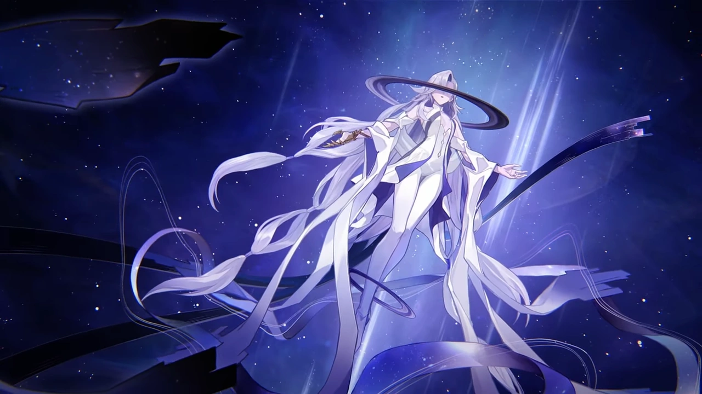

Es conocida por sus atrocidades contra todos los seres vivos del universo. La Alianza Xianzhou considera a Celenova como la general de primera línea de Nanook. Por alguna razón, solicitó un cese al fuego en el Zhuming para solicitar que la nave atacara al mundo natal de los tejealas. Esta acción terminó con la destrucción del planeta. Las civilizaciones del sistema estelar Sedunirama le declararon la guerra a Celenova. Por alguna razón, las tropas de Celenova se retiraron. Feixiao y Jiaoqiu creen que esto se debe a que está ejecutando una orden aún más importante. Celenova es una comandante temible cuya flota opera con una coordinación perfecta, capaz de ejecutar tácticas avanzadas incluso bajo condiciones adversas. Bajo su mando, unidades comunes se vuelven extremadamente letales. Puede liderar fuerzas intergalácticas y participar en batallas de gran escala. Incluso si se la decapita, no muere, pero al menos interrumpe su cadena de mando temporalmente.